System and Method for Real-Time Inference and Continuous Tracking of Electrical Distribution Grid Topology Using Voltage Phase Angle Correlation Across Consumer Distributed Energy Resource Inverters
A system exploiting IEEE 1547-2018-compliant consumer solar and battery inverters as distributed phasor measurement units to infer and continuously track electrical distribution grid topology changes. Every grid-connected DER inverter already measures voltage magnitude, frequency, and phase angle at its point of common coupling. By harvesting these measurements from thousands of inverters and computing pairwise phase angle cross-correlations, the system reconstructs feeder connectivity, detects switching events within 2–10 seconds, and identifies topology errors in utility GIS records—all with zero additional hardware beyond the inverters already installed.

System and Method for Low-Oil Countertop Cooking via Atomized Oil Misting Combined with Forced Convection Heating for Crust Formation in Crust-Critical Foods
A countertop cooking appliance that combines high-velocity forced convection at 180-230°C with continuous atomized oil misting of a high-smoke-point oil onto the food surface, producing deep-fried texture and color using 1-2 tablespoons (15-30 mL) of oil per cook cycle instead of the 1.4-1.9 L required by submergence deep fryers. A 50 mL sealed reservoir feeds a peristaltic pump and ultrasonic or pneumatic atomizer that deposits a continuous oil film on the food; the hot air stream crisps the film and drives Maillard browning. Reduces oil absorption to 1-5% by weight (vs. 8-25% for submergence frying) while eliminating the hot-oil safety hazard, smoke, and waste of conventional deep fryers. Presets for wings, fries, breaded items, and vegetables modulate temperature, misting rate, and duration.
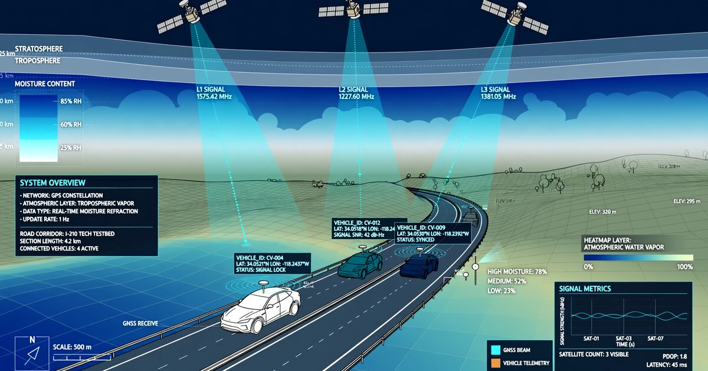
System and Method for Real-Time Tropospheric Water Vapor Mapping Using GNSS Pseudorange Residual and Signal-to-Noise Ratio Analysis from Connected Vehicle Fleet Receivers with Federated Spatiotemporal Inference
A system that maps atmospheric water vapor in real time by analyzing GNSS pseudorange residuals and signal-to-noise ratio patterns from the navigation receivers already embedded in connected vehicles. Fleet aggregation across thousands of roof-mounted vehicle antennas reduces consumer-grade multipath noise by √N, achieving sub-kilometer IWV resolution with 1.8 kg/m² RMSE against radiosonde truth. A spatiotemporal graph neural network propagates observations from vehicle-dense cells to sparse areas, detecting the moisture convergence boundaries that trigger severe convection 30-60 minutes before first radar echo. Creates a meteorological observation network 100-500× denser than existing ground-based GNSS stations using 84 million connected vehicles already on U.S. roads.
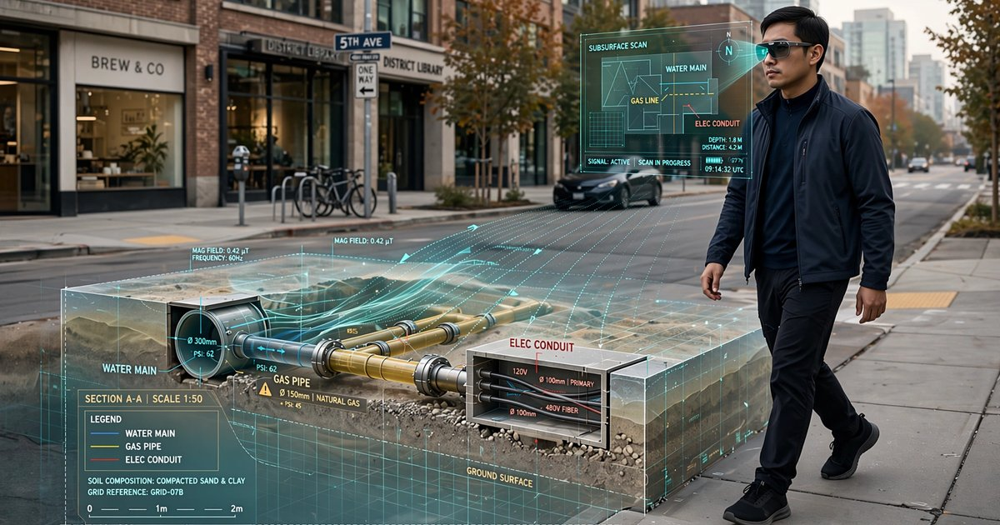
System and Method for Automated Subsurface Utility Infrastructure Mapping Using Pedestrian Smart Glasses Magnetometer Anomaly Detection with Computer Vision Surface Feature Correlation and Fleet-Aggregated Graph-Based Spatial Inference
A system that creates continuously-updated underground utility maps by fusing magnetometer anomaly signatures and computer vision surface feature detection from consumer smart glasses worn by ordinary pedestrians. Fleet aggregation across thousands of traversals pushes consumer MEMS magnetometer sensitivity from ~5 μT to ~0.15 μT, approaching professional survey grade. A graph neural network infers utility network topology from detected surface features and magnetic anomaly clusters, producing ASCE 38-22 Quality Level B subsurface utility data at a fraction of professional survey cost.
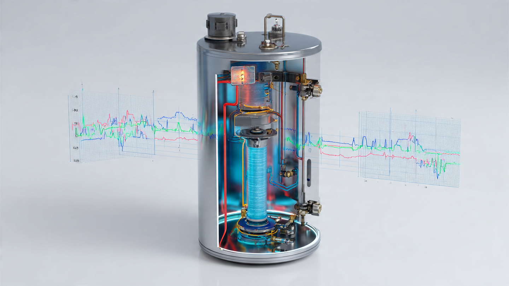
System and Method for Continuous Potable Water Quality Monitoring Using Domestic Water Heater Sacrificial Anode Galvanic Current Measurement and Electrochemical Impedance Spectroscopy for Detection of Source Water Chemistry Changes and Lead Service Line Corrosion Events
A system that continuously monitors potable water quality by measuring galvanic current and electrochemical impedance at the sacrificial anode rod already installed in every residential tank water heater. An $18 instrumentation module extracts solution resistance, charge transfer resistance, and double-layer capacitance from periodic EIS sweeps, achieving ±15 ppm TDS, ±0.2 pH, and 91% AUC for lead detection above 15 ppb. Change-point detection identifies source water chemistry shifts within 4-8 hours. Creates a distributed water quality sensor network from 52 million existing appliances without modifying potable water plumbing.
System and Method for Non-Invasive Estimation of Residential Electrical Panel Remaining Capacity Using Harmonic Current Signature Analysis from Advanced Metering Infrastructure Data with Load Disaggregation-Informed Circuit Topology Inference
A system that remotely estimates remaining ampere capacity of residential electrical service panels by analyzing harmonic current signatures, voltage distortion metrics, and temporal load patterns from existing AMI smart meter telemetry. Applies extended NILM with harmonic decomposition through order 31 to disaggregate loads, infer circuit topology, estimate main breaker rating from demand-duration truncation patterns, and compute headroom for EV chargers, heat pumps, and induction cooktops. A gradient-boosted ensemble trained on 42,000 paired AMI-and-inspection observations achieves ±12A MAE on 200A panels and 89% accuracy on panel upgrade necessity classification. Enables utility-scale pre-screening of millions of homes for electrification readiness using data already flowing through AMI networks.
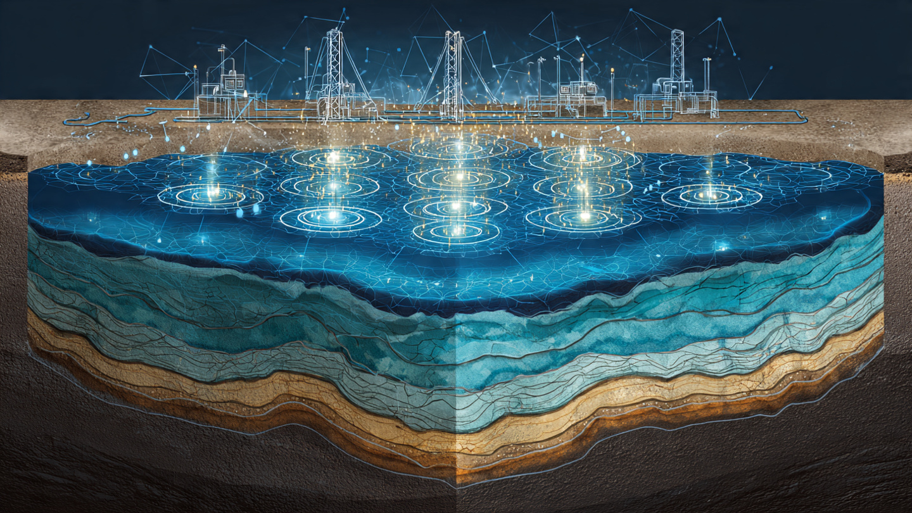
System and Method for Real-Time Aquifer Recharge Rate Estimation Using Distributed Pressure Transient Analysis from Municipal Water Well SCADA Telemetry Networks with Physics-Constrained Graph Neural Networks
A system that estimates spatially-varying aquifer recharge rates by analyzing pressure transient signatures from routine pump cycling events recorded in existing municipal water well SCADA telemetry. Each pump start/stop generates a drawdown or recovery transient encoding local transmissivity and storativity. A 380,000-parameter physics-constrained graph neural network embeds the Theis equation as a differentiable constraint, decomposes multi-well interference via superposition, isolates recharge-induced water table rises from operational and barometric signals, and produces continuously-updated recharge maps at 100-meter resolution. Requires zero additional sensors or dedicated aquifer tests.
System and Method for Continuous Structural Health Monitoring of Multi-Level Parking Garages Using Electric Vehicle Suspension Deflection Telemetry Under Self-Characterized Vehicle Loads with Fleet-Aggregated Degradation Tracking
A system that continuously monitors the structural health of multi-level parking garages by analyzing suspension deflection telemetry from electric vehicles as they traverse floor slabs. Each EV serves as a self-calibrating mobile load cell with mass known to ±5 kg from battery SOC and manufacturing records. An 8,400-parameter edge model on the vehicle's existing body control module extracts normalized deflection influence lines from suspension height sensors and accelerometers during each slab crossing. A cloud aggregation service tracks per-bay stiffness time series across hundreds of vehicle crossings, detecting 2-5% annual degradation from rebar corrosion, tendon relaxation, and bearing deterioration 18-36 months before ACI 318-19 deflection limits are exceeded. Requires zero instrumentation of the parking structure.
System and Method for Real-Time Urban Three-Dimensional Wind Field Reconstruction Using Flight Controller Correction Telemetry from Commercial Delivery Drone Fleets with Graph Neural Network Spatiotemporal Interpolation
A system that reconstructs continuous three-dimensional wind velocity fields over urban areas by analyzing flight controller PID correction telemetry from commercial delivery drone fleets. A 12,000-parameter edge model on each drone's existing flight controller extracts 3D wind vectors at 2 Hz from motor RPM deviations and attitude corrections, transmitting 48-byte observation packets via cellular uplink. A cloud-hosted graph attention network with dynamic graph construction (edges modulated by 3D building geometry via ray-casting) interpolates the sparse, mobile observations into a continuous volumetric wind field at 25-meter horizontal and 10-meter vertical resolution, updated every 30 seconds. Requires zero additional sensors on the drones.
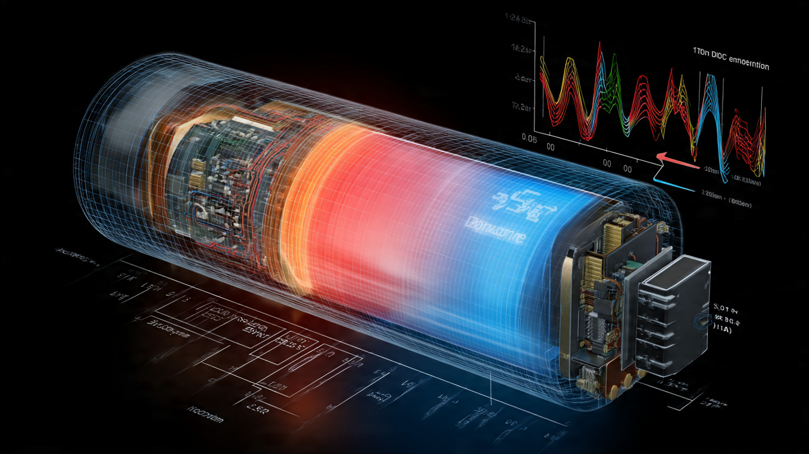
System and Method for Continuous Estimation of Lithium-Ion Battery Cell Internal Temperature Distribution Using Multi-Frequency Electrochemical Impedance Spectroscopy Superimposed on Operational Current with Physics-Constrained Neural Network Inversion on Standard Battery Management System Hardware
A zero-additional-hardware system that estimates the internal radial temperature distribution of lithium-ion battery cells by superimposing multi-frequency AC perturbation signals (5–20 mV RMS, 0.1 Hz–10 kHz) onto operational current using existing BMS cell-balancing circuitry. Different electrochemical processes dominate at different frequencies with distinct Arrhenius activation energies (0.15–0.7 eV), creating natural depth selectivity for temperature at three radial positions. A physics-constrained neural network (68,000 parameters, 140 KB INT8) embeds differentiable Arrhenius kinetics and a lumped thermal model, achieving ±1.5°C target accuracy and detecting thermal runaway precursors 30–120 seconds before surface thermistors.
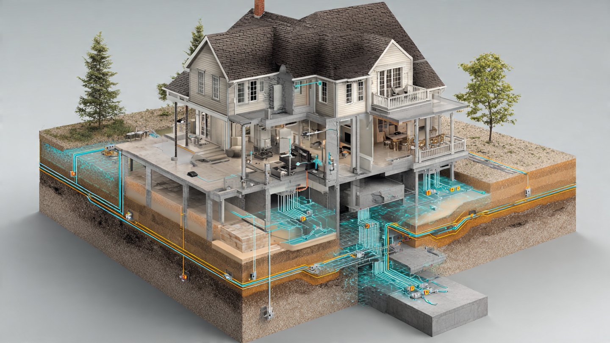
System and Method for Predictive Detection of Residential Foundation Differential Settlement Using Dense Low-Cost MEMS Tiltmeter Arrays with Soil Moisture Correlation and Graph Attention Network Spatiotemporal Analysis
A system deploying 8–24 dual-axis MEMS inclinometers ($3–8 each) at 1.5–3 meter intervals along residential foundation walls, paired with capacitive soil moisture probes at three depths, and analyzed by a 42,000-parameter graph attention network that models the heterogeneous coupling between soil volume change and structural tilt response. Detects differential settlement rates of 0.0005°/week, providing 6–18 months of advance warning before visible cracking at the 1/300 angular distortion threshold, at a total system cost of $120–280 versus $2,000–$15,000 for professional surveying.
System and Method for Continuous Estimation of Room-Level Occupancy Count and Activity Classification Using Existing VAV Duct Static Pressure Sensor Networks with Physics-Informed RNN Inference
A software-only system that estimates per-room occupancy counts and classifies activity types (desk work, meetings, high activity) by analyzing existing HVAC Variable Air Volume duct pressure, airflow, and damper position telemetry with a physics-informed recurrent neural network. Requires no additional sensors, cameras, or wiring. The differentiable duct network model separates occupancy-driven thermal loads from solar gain and equipment loads, achieving target ±2 person RMSE at 15-minute resolution.
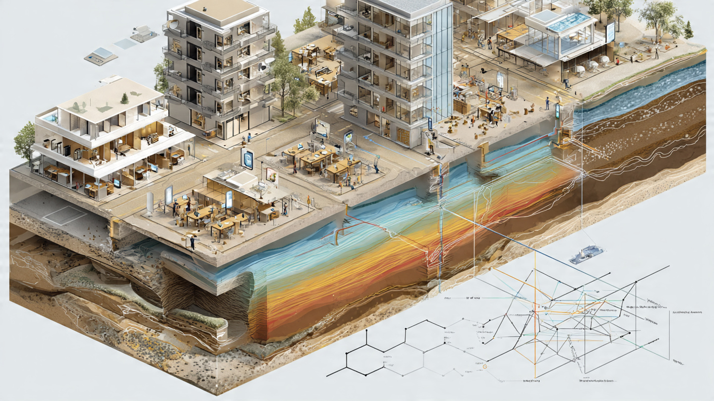
System and Method for Continuous Soil Liquefaction Susceptibility Mapping Using Crowdsourced Smartphone Accelerometer HVSR Analysis with Graph Neural Network Spatial Interpolation
A system that repurposes MEMS accelerometers in consumer smartphones to perform horizontal-to-vertical spectral ratio (HVSR) analysis of ambient seismic noise during periods of device stillness. On-device spectral processing extracts soil column resonance frequency (f₀) and amplification (A₀), transmitting only a 560-byte summary packet to a cloud GNN that interpolates between sparse measurements using geological priors. The resulting 50-meter-resolution liquefaction susceptibility maps update continuously. During earthquakes, the same network provides real-time shaking data for liquefaction nowcasts within 30 seconds of shaking onset.
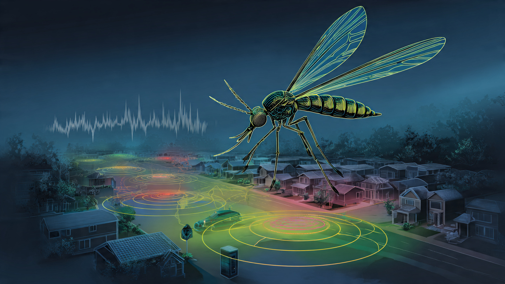
System and Method for Real-Time Mosquito Population Density Estimation and Species-Level Classification Using Distributed Acoustic Wingbeat Frequency Analysis from Consumer IoT Device Microphone Networks
A system that repurposes the microphone arrays in consumer IoT devices — smart speakers, security cameras, video doorbells, smartphones — for real-time mosquito surveillance. An 18,000-parameter edge classifier detects species-specific wingbeat frequencies (150–900 Hz) in ambient audio, transmitting only 64-byte structured detection reports to a cloud fusion engine. Gaussian process regression over a hexagonal spatial grid aggregates thousands of device detections into calibrated population density maps and species distribution overlays, providing 100-meter spatial resolution and hourly temporal resolution without any dedicated entomological hardware.
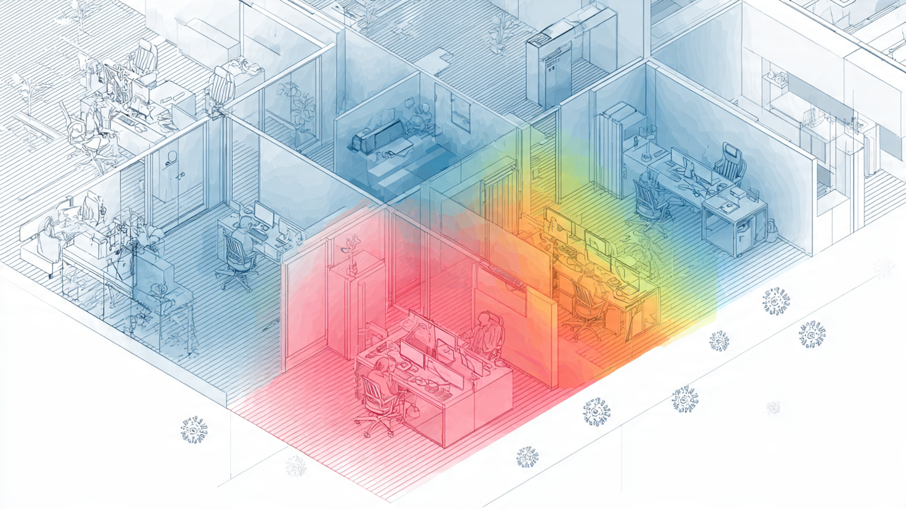
System and Method for Real-Time Indoor Airborne Infection Risk Estimation Using Consumer CO2 Sensor Concentration Decay Kinetics and Occupancy-Normalized Rebreathed Air Fraction Modeling
A system that converts consumer CO2 sensor time-series data into calibrated airborne infection transmission probabilities. Automatic ventilation rate estimation via exponential decay fitting on post-vacancy CO2 segments replaces tracer gas testing. The Rudnick-Milton reformulation of Wells-Riley computes the rebreathed air fraction in real time, while a pathogen-specific quanta engine covers SARS-CoV-2, influenza, measles, TB, and RSV. Runs on the sensor's existing microcontroller in under 100 KB firmware, outputting a continuously updated infection risk index, ventilation adequacy score, and time-to-threshold alerts with no hardware beyond a single $15-179 NDIR CO2 sensor.
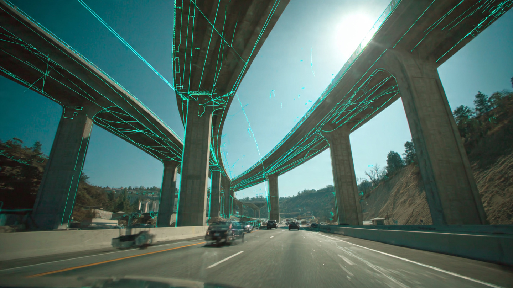
System and Method for Non-Invasive Bridge Structural Health Assessment Using Traffic-Induced Deflection Analysis from Consumer Dashcam Video with Edge-Deployed Physics-Informed Load Rating Estimation
A system that estimates bridge structural condition and load-carrying capacity by measuring traffic-induced deflection from consumer dashcam video. Sub-pixel phase-based optical flow resolves 0.05–0.25 mm vertical deck displacement from a moving vehicle, while ego-motion compensation using IMU data and fixed abutment reference features isolates the bridge response. A physics-informed Euler-Bernoulli beam model fits the measured deflection influence line to estimate effective flexural rigidity, which is compared against design values from the National Bridge Inventory. Crowdsourced across fleet vehicles, 200–500 crossings achieve ±5% EI precision per bridge at $0.02–0.05 per crossing — replacing $5,000–50,000 biennial visual inspections with continuous monitoring at zero sensor installation cost.
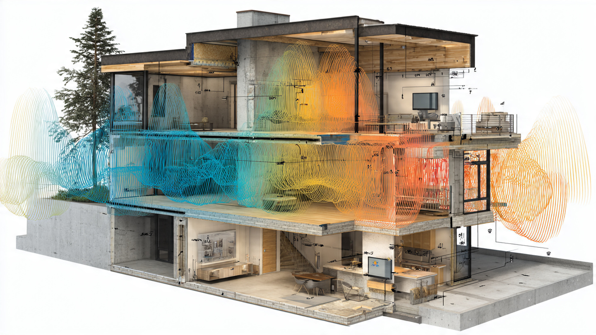
System and Method for Detecting and Localizing Concealed Moisture Intrusion in Building Envelopes Using WiFi Channel State Information from Existing Indoor Wireless Access Point Infrastructure with Temporal Deep Learning and Dielectric Anomaly Mapping
A system that detects concealed water intrusion in walls, floors, and ceilings by analyzing WiFi channel state information from existing mesh access points. Water's relative permittivity (~78 at 2.4 GHz) dwarfs dry building materials (2–8), producing measurable changes in subcarrier amplitude, frequency-selective fading, and group delay as moisture accumulates. A temporal convolutional network trained on multi-scale CSI features distinguishes slow moisture signatures from human activity and thermal cycling, while multi-link dielectric tomography localizes the intrusion to specific wall sections — all at zero incremental hardware cost.
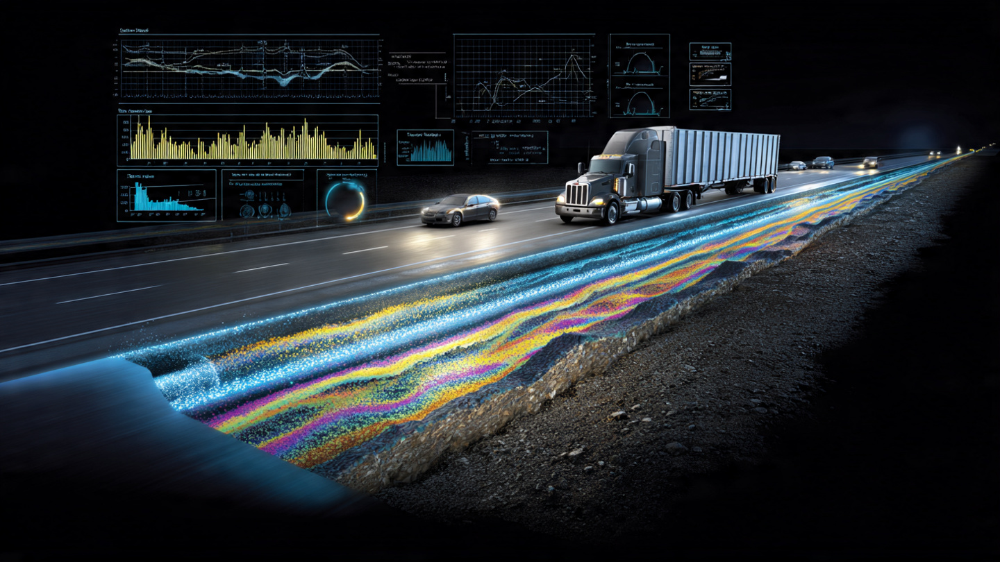
System and Method for Continuous Non-Contact Assessment of Asphalt Pavement Structural Condition Using Traffic-Induced Vibration Transfer Function Analysis from Distributed Acoustic Sensing on Existing Telecommunications Fiber Optic Infrastructure with Recurrent Neural Network Degradation Modeling
A system that repurposes existing buried telecommunications fiber optic cables as distributed acoustic sensors to continuously monitor asphalt pavement structural condition. Traffic-induced vibrations propagate through pavement layers to the fiber, and the frequency-dependent vibration transfer function encodes layer stiffness, damping, bond condition, and moisture state. A CNN-LSTM model trained on paired DAS measurements and ground-truth pavement condition surveys (PCI, FWD, GPR) estimates current condition and predicts remaining useful life for every meter of road along the fiber route, enabling network-scale monitoring at zero incremental sensor cost.
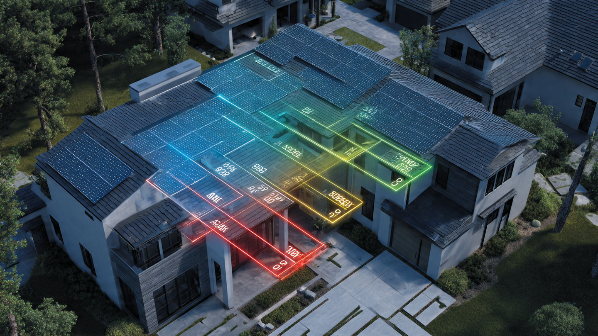
System and Method for Distributed Photovoltaic Array Fault Detection and Power Loss Attribution Using Inter-Inverter Production Correlation Analysis and Weather-Normalized Degradation Modeling
A system that detects, classifies, and quantifies faults in distributed photovoltaic installations by exploiting the statistical correlation structure of production telemetry across co-located microinverters. The system computes pairwise correlation coefficients and weather-normalized production ratios across all inverters within rolling time windows, classifying deviations into five fault categories (partial shading, soiling, cell degradation, connector resistance, inverter electronics degradation) based on each type's mathematically distinct signature in correlation-ratio feature space, then generates prioritized maintenance alerts with estimated energy loss and repair payback periods.
System and Method for Continuous Self-Calibration of Wearable Surface Electromyography Gesture Recognition Models Using Opportunistic Ground Truth Labels Derived from Concurrent Capacitive Touchscreen Input Events on Paired Devices
A system that continuously calibrates wearable sEMG gesture recognition models without explicit calibration sessions by exploiting concurrent touchscreen input events on Bluetooth-paired devices as opportunistic ground truth labels. Each touch event type (tap, swipe, pinch, keystroke) constrains the hand to a known biomechanical configuration, providing labeled sEMG training examples at a rate of 1,000–1,500 per day from natural phone usage. An on-device continual learning pipeline with elastic weight consolidation and experience replay incrementally adapts the gesture classifier to electrode shift, skin impedance drift, and cross-session variability, recovering to within 2% of peak accuracy within 45–90 minutes of natural use with zero user burden and no raw data leaving the device.
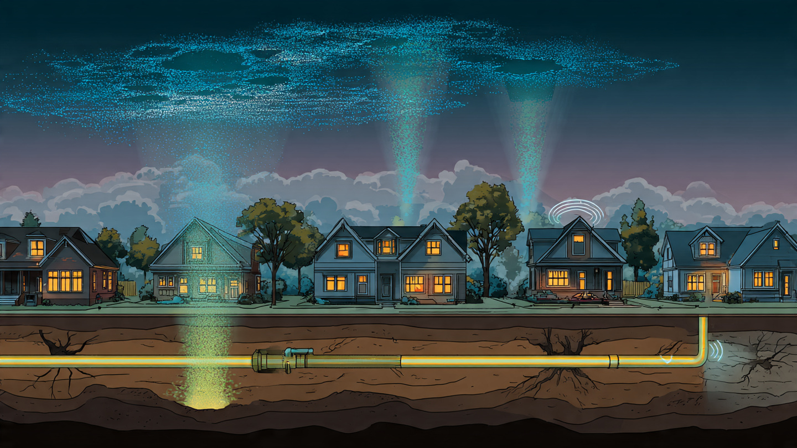
System and Method for Distributed Detection and Geolocation of Underground Natural Gas Distribution Pipeline Micro-Leaks Using Spatiotemporal Correlation of Metal-Oxide Semiconductor Gas Sensor Readings from Crowdsourced Consumer Indoor Air Quality Monitor Networks with Inverse Gaussian Plume Dispersion Modeling
A system that detects and geolocates underground natural gas pipeline micro-leaks by exploiting the metal-oxide semiconductor (MOX) gas sensors in 15–25 million deployed consumer indoor air quality monitors. MOX sensors (Sensirion SGP40, Bosch BME680, ScioSense ENS160) exhibit cross-sensitivity to methane, ethane, and mercaptan odorant at concentrations produced by nearby distribution leaks (1–1,000 ppm indoor enhancement). A cloud platform aggregates anonymized VOC readings, applies Gaussian process baseline estimation and DBSCAN spatial clustering to identify correlated anomalies, excludes indoor sources via wind direction, barometric, and stack effect correlation tests, then geolocates the subsurface leak source using MCMC-sampled inverse Gaussian plume dispersion modeling coupled with soil gas transport, achieving 30–80 meter accuracy from 5+ devices over 72 hours at zero incremental hardware cost.
System and Method for Autonomous Calibration and Drift Correction of Distributed Low-Cost Air Quality Sensor Networks Using Mobile Reference Platforms on Public Transit Vehicles with Graph Attention Network Calibration Transfer
A system deploying reference-grade air quality instruments (BAM, UV photometric O3, CAPS NO2) on municipal transit bus rooftops to provide intermittent colocation calibration events for distributed low-cost sensor networks as buses traverse fixed routes covering 60–85% of the urban street grid. Per-sensor drift models (Kalman-filtered linear → GBDT → conditional neural process) are fit from accumulated colocation data, then a graph attention network with multi-head attention over spatial, meteorological, and land-use edge features propagates calibration corrections to off-route sensors via learned atmospheric correlation structure, reducing network-wide PM2.5 RMSE from 8–12 µg/m³ to <3 µg/m³ at 5–15% the cost of equivalent stationary reference monitor coverage.
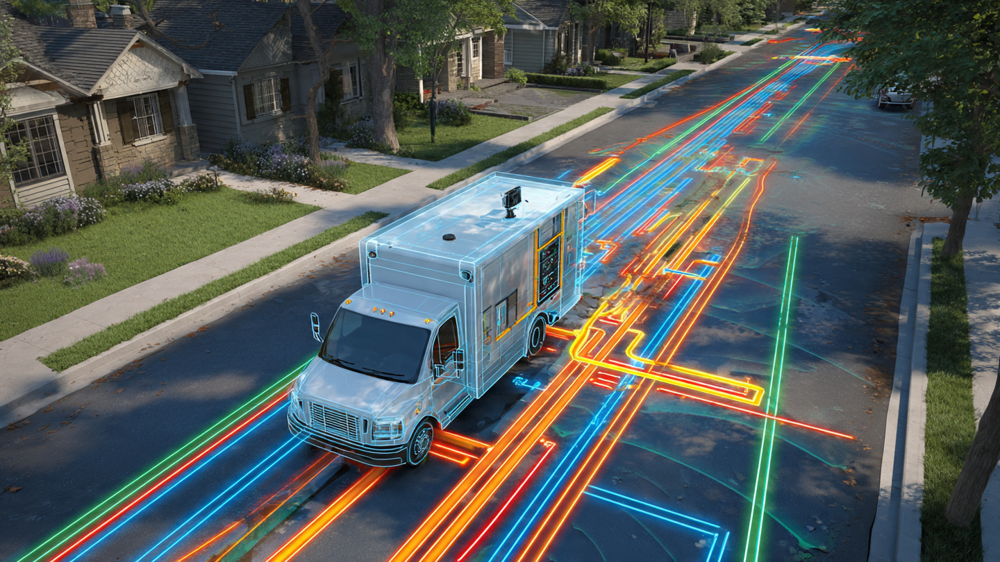
System and Method for Non-Invasive Classification of Buried Water Service Line Materials and Condition Assessment Using Vehicle-Mounted Multi-Frequency Electromagnetic Induction Arrays, Ground-Penetrating Radar, and Deep Learning Material Fingerprinting
A system deploying multi-frequency electromagnetic induction arrays (1 kHz–100 kHz, 24 data channels) and dual-frequency ground-penetrating radar on utility fleet vehicles to classify buried water service line materials (lead, copper, galvanized steel, ductile iron, PVC) by exploiting material-specific conductivity-permeability signatures: lead's low-frequency quadrature-to-in-phase crossover at 8–15 kHz, copper's higher conductivity shifting crossover below 5 kHz, ferromagnetic materials' permeability-dominated response, and plastic pipes' GPR-only dielectric reflection. A dual-branch CNN fuses EMI spectrograms and GPR radargrams for >92% material classification accuracy at driving speeds, enabling city-scale LCRR-compliant lead service line inventories at $12–18K per vehicle versus $500–3,000 per excavation.
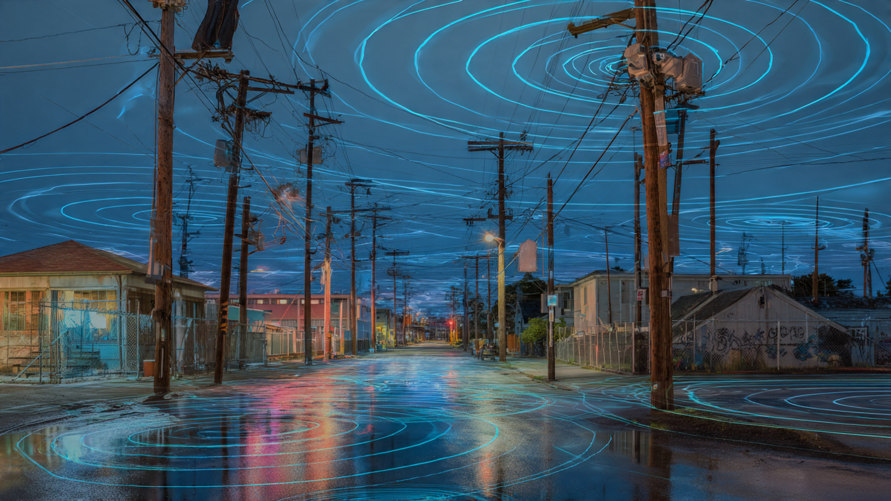
System and Method for Autonomous Detection and Classification of Overhead Electrical Distribution Fault Events Using Infrasound and Acoustic Signatures Captured by Existing Municipal Gunshot Detection Sensor Networks with Deep Learning Spectral Fingerprinting
A system that repurposes existing municipal gunshot detection acoustic sensor networks (20–25 wideband microphones per square mile, deployed in 170+ cities) to autonomously detect, classify, and geolocate overhead electrical distribution fault events, exploiting the distinctive acoustic signatures of arc faults (120 Hz amplitude modulation), conductor clashing (0.3–2 Hz periodicity), transformer explosions (2–20 Hz infrasound), and insulator flashover (8.33 ms power-frequency-locked double pulses), applying a deep CNN classifier on MFCC spectrograms with infrasound features and TDOA multilateration for 10–25 meter geolocation, enabling sub-minute fault alerts to utility SCADA systems at zero incremental hardware cost.
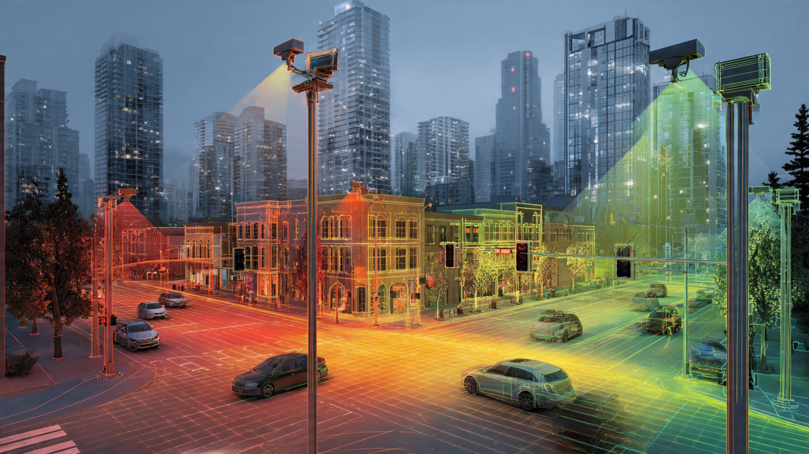
System and Method for Spatially-Resolved Atmospheric Particulate Matter Estimation Using Visible-Light Extinction Analysis from Existing Outdoor Camera Infrastructure with Neural Calibration Against Colocated Reference Monitors
A system that repurposes existing outdoor cameras (traffic, security, dashcam fleets) as hyperlocal PM2.5/PM10 sensors by analyzing visible-light extinction across reference targets at known distances, applying the Beer-Lambert-Bouguer law to compute spectral contrast attenuation, and calibrating via a CNN trained on synchronized imagery-monitor pairs, producing continuous 100-meter resolution urban air quality maps from the estimated 85 million outdoor cameras already deployed in the US at zero incremental hardware cost.
System and Method for Continuous Urban Heat Island Microclimate Mapping Using Fleet Vehicle External Temperature Sensor Telemetry, Spatiotemporal Kriging, and Land Use Regression Covariates
A system that harvests ambient air temperature from the NTC thermistors already installed in connected fleet vehicles, applies a vehicle-specific bias correction model compensating for engine heat soak, solar loading, and radiator effects, fuses corrected observations with land use regression covariates (impervious surface fraction, NDVI, sky view factor, building density), and interpolates via spatiotemporal kriging with anisotropic Matérn covariance to produce continuous street-level urban heat island maps at 50–100 m resolution, enabling heat vulnerability alerts, cool corridor routing, and urban greening ROI estimation using millions of already-connected fleet vehicles.
System and Method for Continuous Indoor Temperature Field Mapping Using Bluetooth Low Energy Beacon Battery Voltage Telemetry and Gaussian Process Spatial Interpolation
A system that infers ambient temperature from the battery voltage telemetry of existing BLE beacons, exploiting the electrochemical temperature coefficient of lithium coin cells (−0.3 to −0.5 mV/°C OCV, 200–400 mV IR-drop separation over 25°C under TX load) and applying Gaussian process regression with a Matérn 5/2 spatial kernel to produce continuous indoor thermal field maps with quantified uncertainty, enabling HVAC optimization, cold chain compliance, and building energy auditing at zero marginal hardware cost across billions of already-deployed beacons.
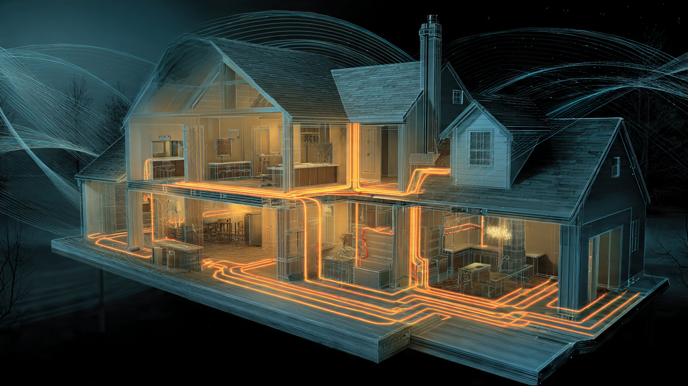
System and Method for Predictive Residential Electrical Wiring Degradation Detection Using Power Line Communication Channel State Information from Consumer Broadband-over-Powerline Adapters and On-Premises Edge Inference
A system repurposing OFDM channel estimation data from consumer broadband-over-powerline adapters to continuously monitor residential wiring health, detecting loose connections, insulation carbonization, moisture ingress, and thermal degradation through channel frequency response drift analysis, with multi-node fault localization via channel impulse response triangulation and on-premises temporal convolutional network inference.
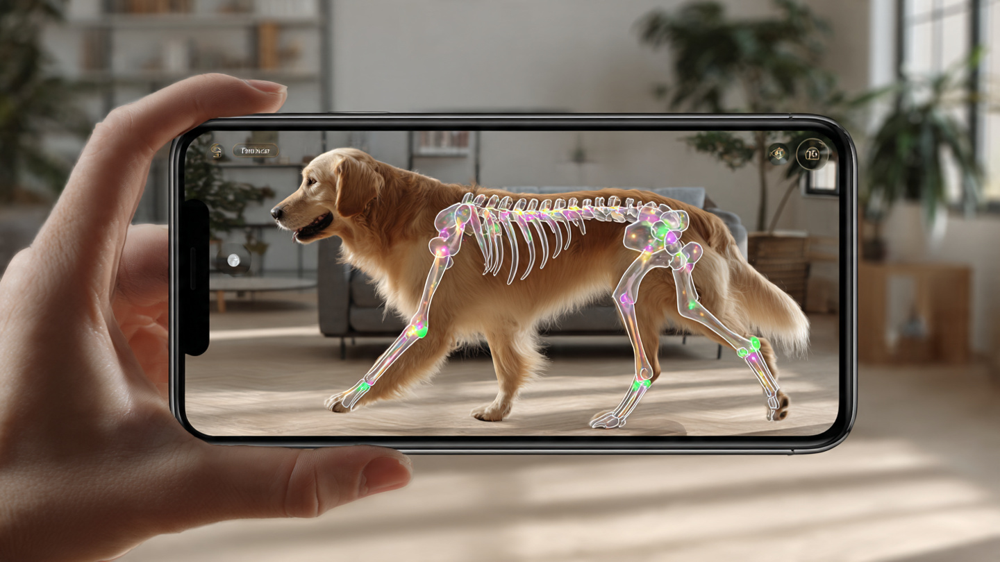
System and Method for Automated Companion Animal Health Screening Using Smartphone Video-Based Gait Kinematics Analysis, Respiratory Rate Estimation, and Longitudinal Behavioral Anomaly Detection
A system using consumer smartphone video to perform markerless pose estimation on companion animals, extracting gait kinematics, respiratory rate, and body condition score from a single capture, with breed-specific normalization and longitudinal behavioral anomaly detection for early disease identification, all running on-device with federated learning for continuous improvement.
System and Method for Non-Contact Rotating Machinery Health Assessment Using Consumer Mobile Device Acoustic Emission Analysis and Cross-Domain Transfer Learning
A system using consumer smartphone microphones to capture acoustic emissions from rotating machinery, running on-device spectral decomposition and cross-domain transfer learning from vibration datasets to classify bearing faults, gear wear, and imbalance conditions, with federated learning for continuous improvement without transmitting raw audio off-device, and Weibull survival models for remaining useful life estimation.
System and Method for Predictive Remaining Useful Life Estimation of Asphalt Pavement Using Fleet-Vehicle-Mounted Thermal Infrared Imaging and Physics-Informed Thermal Inertia Inverse Modeling
A system that estimates remaining useful life of asphalt pavement at city scale using thermal inertia measurements from low-cost LWIR cameras on fleet vehicles, computing apparent thermal inertia via Bayesian inversion of a 1-D heat conduction model against multi-pass surface temperature observations, and predicting segment-level remaining useful life through a spatiotemporal convolutional neural network that detects subsurface degradation 12 to 24 months before visible distresses appear.
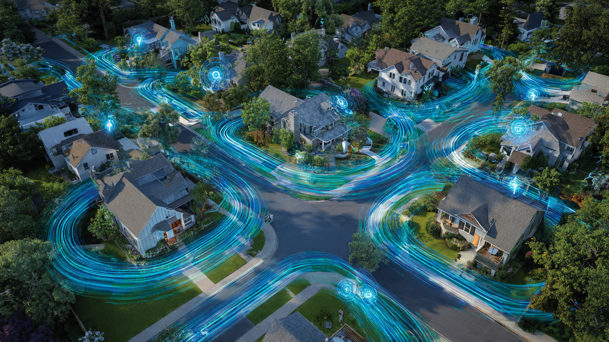
System and Method for Municipal Water Distribution Network Leak Detection and Localization Using Crowdsourced Pressure Telemetry from Consumer Smart Water Meters and Physics-Informed Graph Neural Networks
A system that detects and localizes leaks in municipal water distribution mains by aggregating high-frequency pressure telemetry from networks of consumer-grade smart water meters, using time-difference-of-arrival analysis of pressure transients propagating through the pipe network and a physics-informed graph neural network whose topology mirrors the utility pipe infrastructure, with privacy-preserving differential pressure reporting that prevents inference of household usage patterns.
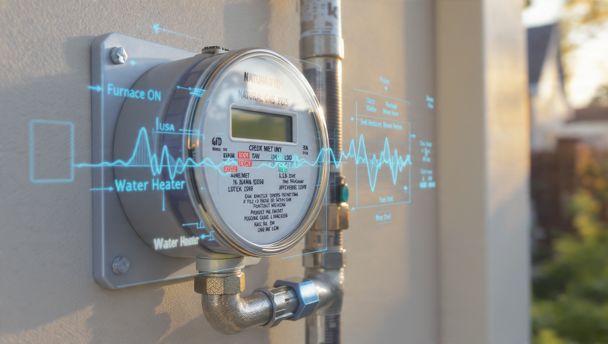
System and Method for Non-Intrusive Residential Natural Gas Appliance Load Disaggregation Using Meter-Point Pressure Waveform Transient Analysis and Edge-Deployed Source Separation Neural Networks
A system that identifies individual natural gas appliances and estimates per-appliance consumption from a single high-resolution pressure transducer at the gas meter, using valve-opening transient signatures including onset slope, ring-down reflection patterns, and steady-state pressure offsets processed through a convolutional source separation network that resolves overlapping multi-appliance activations and enforces global flow consistency against the total metered flow.
System and Method for Continuous Urban Tree Health Assessment and Predictive Mortality Mapping Using Opportunistic Multi-Pass Spectral Imaging from Municipal Fleet Vehicles and Spatiotemporal Graph Neural Networks
A system that continuously monitors the health of individual urban trees by mounting multispectral cameras (RGB + NIR) on municipal fleet vehicles such as refuse trucks and street sweepers, performing on-device canopy segmentation and spectral index computation, resolving tree identities across multiple vehicle passes, and predicting 6-month mortality risk via a spatiotemporal graph neural network that models spatial relationships between neighboring trees to detect correlated decline from pests, disease, or shared environmental stress.
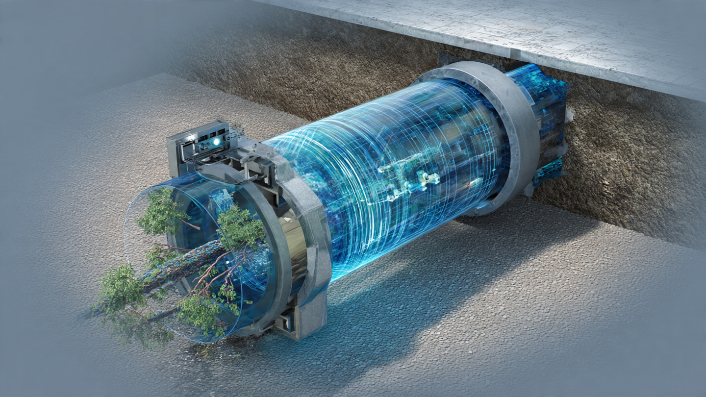
System and Method for Non-Invasive Sewer Lateral Condition Assessment and Predictive Blockage Detection Using Residential Fixture Drain Acoustic Emission Analysis and Edge-Deployed Spectral Neural Networks
A system that detects developing sewer line blockages and pipe deterioration by capturing acoustic emissions from ordinary residential drain events (toilet flushes, sink usage, shower flow) using a waterproof MEMS microphone at the building cleanout, extracting spectral features including pipe resonance splitting caused by partial obstructions, classifying seven condition states via an edge-deployed CNN, and tracking longitudinal spectral drift to predict time-to-blockage weeks before catastrophic failure.
System and Method for Continuous Indoor Radon Concentration Estimation Without Dedicated Radon Sensors Using Smart Home Barometric Pressure Differential Time-Series, Soil Permeability Transport Models, and Edge-Deployed Physics-Informed Neural Networks
A system that estimates indoor radon concentration without dedicated radon detectors by analyzing barometric pressure differential time-series from existing smart home sensors (thermostats, weather stations, smartphones), computing foundation-level indoor-outdoor pressure differentials accounting for stack effect, wind depressurization, and HVAC mechanical depressurization, and processing these through a physics-informed neural network embedding the Nazaroff advective soil-gas transport equation conditioned on USGS soil radon potential maps, generating continuous radon risk alerts and preemptive ventilation recommendations.
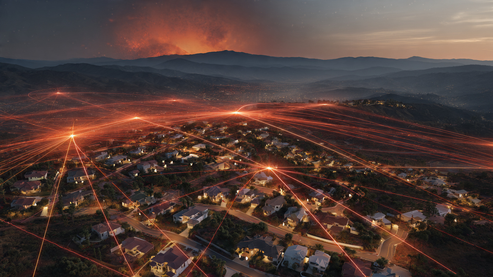
System and Method for Early Wildfire Detection and Ember Transport Corridor Prediction Using Distributed Consumer Weather Station Microclimate Anomaly Fusion and Physics-Informed Neural Networks
A system that fuses barometric pressure microvariations, wind vectors, temperature anomalies, humidity drops, and particulate matter data from the existing network of consumer weather stations to detect wildfire ignition events via spatiotemporal graph neural networks and predict ember transport corridors using physics-informed neural networks embedding Rothermel fire spread and Albini ember lofting models, issuing geofenced alerts to residents in predicted ember landing zones 15–45 minutes before ember arrival.
System and Method for Non-Invasive Continuous Building Envelope Thermal Performance Assessment Using Smart Thermostat Heating and Cooling Response Curve Analysis with Edge-Deployed Machine Learning
A system that continuously infers building envelope thermal resistance and infiltration parameters from heating and cooling response curves already recorded by commodity smart thermostats, cross-referenced with public weather API data, using a Bayesian state-space model to track degradation over months and years and generate actionable alerts for insulation failures, air seal defects, and moisture intrusion events without requiring any additional hardware, sensors, or site visits.
System and Method for Non-Intrusive Residential Water End-Use Disaggregation and Anomalous Flow Detection Using Smart Meter Hydraulic Transient Fingerprinting, Blind Source Separation, and Self-Supervised Contrastive Learning
A system that disaggregates whole-house water consumption into per-fixture end-use categories using hydraulic pressure transient signatures captured by existing smart water meters, applies non-negative tensor factorization for blind source separation of concurrent fixture events, and trains a temporal convolutional network via self-supervised contrastive learning across a utility service territory without labeled data, enabling per-fixture water accounting and real-time leak detection at less than $15 incremental hardware cost per meter.
System and Method for Continuous Road Surface Friction Coefficient Estimation Using Crowdsourced Vehicle Tire-Road Acoustic Emission, Wheel Speed Sensor Micro-Slip Analysis, and Self-Supervised Contrastive Learning for Real-Time Friction Mapping
A system that fuses tire-road acoustic emission captured by existing vehicle cabin microphones with wheel speed sensor micro-slip ratios during normal driving, trains a friction estimation model via self-supervised contrastive learning using cross-vehicle consistency on shared road segments, and aggregates per-vehicle estimates into real-time spatiotemporal friction maps served to navigation and autonomous driving systems, requiring no new hardware on vehicles manufactured after 2020.
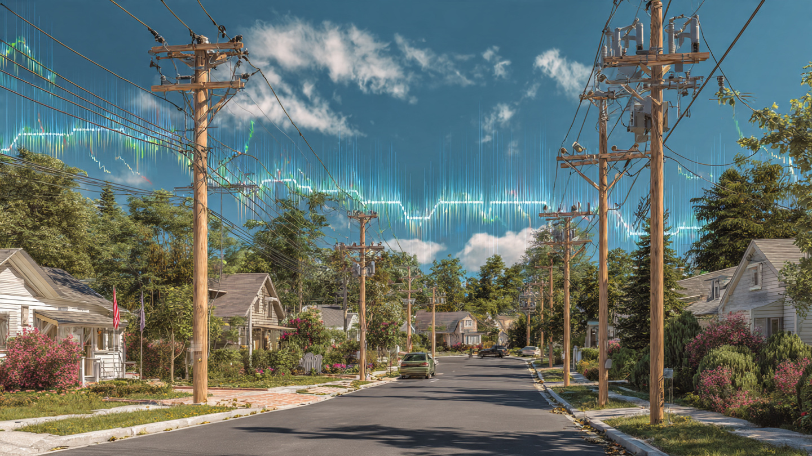
System and Method for Real-Time Distribution Transformer Incipient Fault Detection and Remaining Useful Life Estimation Using Smart Meter Voltage Harmonic Spectrum Analysis and Federated Graph Neural Networks
A system that detects incipient distribution transformer faults by analyzing voltage harmonic spectra from existing smart meters using a federated graph neural network that models the radial distribution network topology, distinguishing transformer-originated harmonics from load and feeder sources, enabling per-transformer remaining useful life estimation at zero marginal hardware cost via firmware updates to deployed AMI meters.
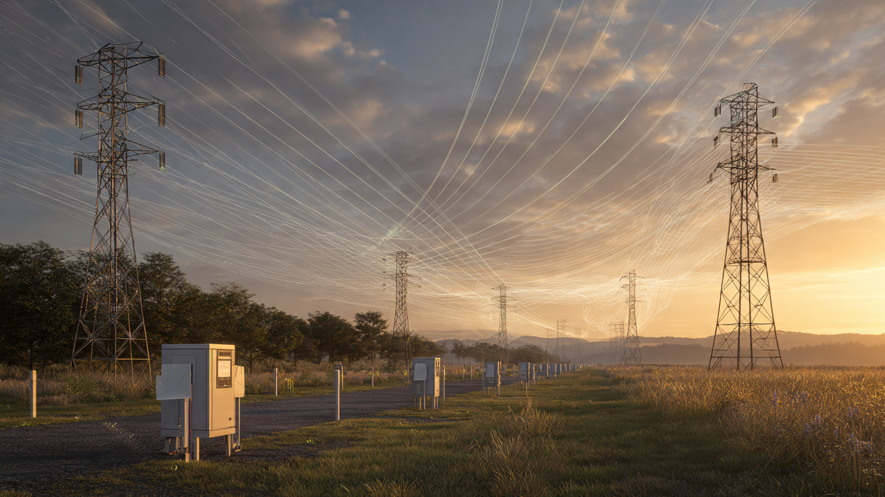
System and Method for Real-Time Power Transmission Line Conductor Sag Estimation and Dynamic Line Rating Using Ground-Level Triaxial Magnetometer Arrays and Physics-Informed Recurrent Neural Networks
A system that deploys low-cost triaxial magnetometer arrays at ground level within transmission line rights-of-way, measures the 60 Hz magnetic field gradient produced by overhead conductors, and solves the inverse problem of conductor height estimation using a physics-informed recurrent neural network encoding the Biot-Savart law and IEEE 738 thermal balance equations, enabling real-time dynamic line rating that safely increases transfer capacity by 15–40% at $85 per sensor node with no conductor contact required.
System and Method for Real-Time Urban Flash Flood Depth Prediction and Dynamic Pedestrian-Vehicle Routing Using Distributed Stormwater Level Sensor Networks, LiDAR-Derived Digital Elevation Models, and Physics-Constrained Graph Neural Networks
A system that deploys low-cost ultrasonic water level sensors inside storm drain manholes and catch basins, fuses real-time hydraulic observations with NEXRAD radar rainfall data and municipal pipe network GIS, and uses a physics-constrained graph neural network to predict street-level flood depths 15–60 minutes before overflow occurs, feeding a routing API that dynamically reroutes pedestrians and vehicles around predicted inundation zones.
System and Method for Continuous Crop Water Stress Detection and Precision Irrigation Scheduling via Contactless Monitoring of Plant Xylem Cavitation Acoustic Emissions Using Ultrasonic MEMS Microphone Arrays and Edge-Deployed Neural Networks
A system that detects crop water stress by listening to ultrasonic clicks produced by xylem cavitation events using contactless MEMS microphone arrays positioned near plant stems, classifying stress levels with an on-device temporal convolutional network, and triggering precision irrigation only when and where plants signal physiological need, targeting 20–40% water savings over timer-based or soil-moisture-only systems at $13 per monitored plant.
System and Method for Non-Invasive Refrigerant Charge Estimation in Vapor-Compression HVAC Systems via Compressor Motor Current Signature Analysis and Edge-Deployed Time-Frequency Neural Networks
A system that estimates refrigerant charge level by clamping a $3 split-core current transformer around the compressor power cable and analyzing the motor current waveform's time-frequency signature with an on-device CNN, detecting ±5% charge deviations and fault conditions (liquid slugging, active leaks, valve wear) without any refrigerant-side instrumentation, EPA certification, or system downtime.
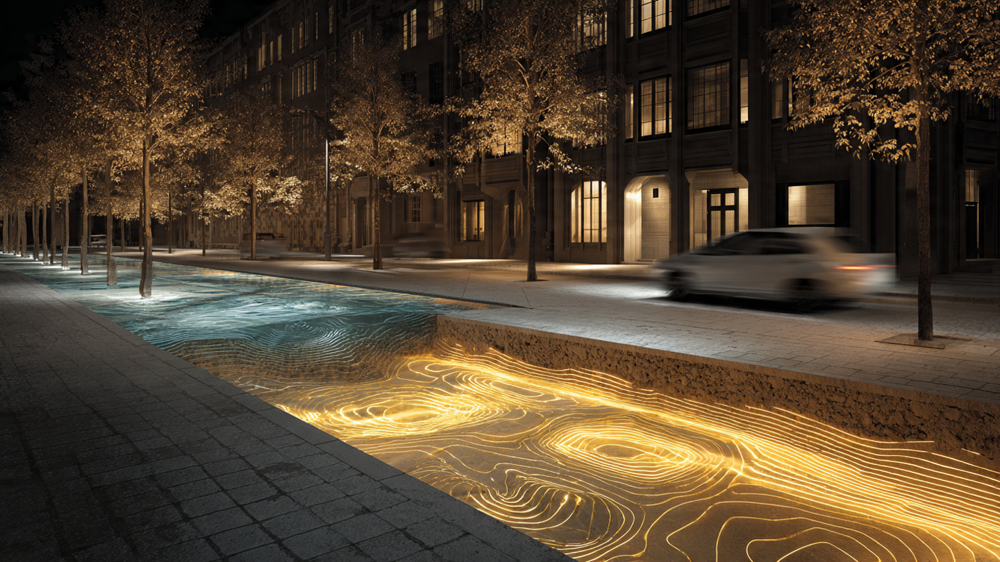
System and Method for Continuous Subsurface Void Detection Beneath Roadway Surfaces Using Fleet-Vehicle-Mounted Acoustic Resonance Sensing and Edge-Deployed Spectral Convolutional Neural Networks
A system that repurposes ordinary municipal fleet vehicles (transit buses, refuse trucks, street sweepers) as mobile subsurface void detectors by mounting low-cost MEMS accelerometer arrays and contact microphones to vehicle undercarriages, analyzing the tire-road vibroacoustic coupling signature with an on-device spectral CNN, and aggregating multi-pass observations via Bayesian spatial fusion to build probabilistic city-scale void hazard maps without dedicated survey equipment.
System and Method for Continuous Microplastic Detection and Polymer-Type Classification in Municipal Water Distribution Systems Using Inline Multi-Angle Light Scattering and On-Device Neural Network Particle Identification
An inline flow-through optical cell using a 635 nm laser and eight-angle photodetector array that produces Mie scattering profiles for each particle, classified by an on-device 1D-CNN into polymer type (PE, PP, PS, PET, nylon) and size bin, enabling continuous real-time microplastic monitoring across water distribution networks at under $120 per sensor node.
System and Method for Non-Invasive Buried Pipe Condition Assessment Using Surface-Mounted Vibro-Acoustic Sensor Arrays and Physics-Informed Graph Neural Networks
A non-invasive system that deploys piezoelectric accelerometers at fire hydrants and valve boxes, propagates guided elastic waves through buried pipe walls, and uses a physics-informed graph neural network encoding network topology to infer pipe material, wall thickness, corrosion grade, and remaining useful life without excavation.
System and Method for Continuous Neurodegeneration Screening via Consumer Wearable Gait Microanalysis
An on-device inference pipeline that detects sub-clinical gait asymmetries from consumer IMU data, generating a longitudinal neurodegeneration risk score without cloud connectivity or clinical hardware.
System and Method for Automated Detection of Contradictions in Municipal Code Using Large Language Models
An LLM-based pipeline that ingests complete municipal code corpora, identifies logical contradictions between ordinances, and generates structured conflict reports with citation chains for legislative review.
System and Method for Passive Structural Health Monitoring of Bridges Using Consumer Smartphone Accelerometers and Computer Vision
A crowdsourced system combining smartphone accelerometer data from vehicles crossing bridges with periodic computer-vision crack detection from dashcam footage, generating structural health scores without dedicated sensor installations.
System and Method for Real-Time Pollinator Census in Agricultural Fields Using Edge-Deployed Bioacoustic Classification
A distributed network of low-cost MEMS microphone nodes running on-device audio classification models to identify, count, and map pollinator species activity across agricultural parcels in real time, enabling precision pollination management.
System and Method for Synthetic Grid Inertia Generation Using Coordinated Electric Vehicle Battery Discharge with Predictive Frequency Deviation Modeling
A hierarchical control system that monitors grid frequency in real time and coordinates millisecond-scale power injection from distributed EV batteries to provide synthetic rotational inertia, replacing retiring synchronous generators without dedicated grid-scale storage.
System and Method for Real-Time Multilateral Settlement Netting Across Heterogeneous Payment Rails Using Graph-Based Obligation Compression
A settlement engine that ingests payment obligations from multiple rails (ACH, Fedwire, SWIFT, RTP, stablecoin ledgers), constructs a real-time obligation graph, and computes optimal multilateral netting sets that reduce gross settlement volume by 60-80%, lowering systemic liquidity requirements without requiring participants to share a single ledger.